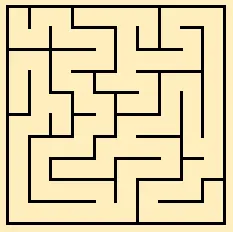
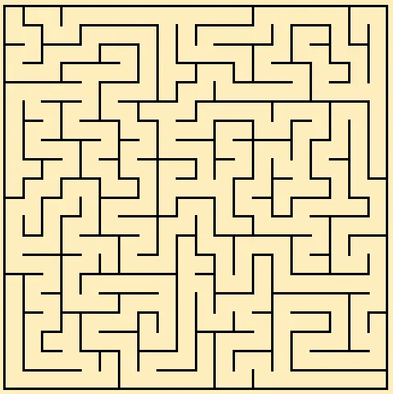
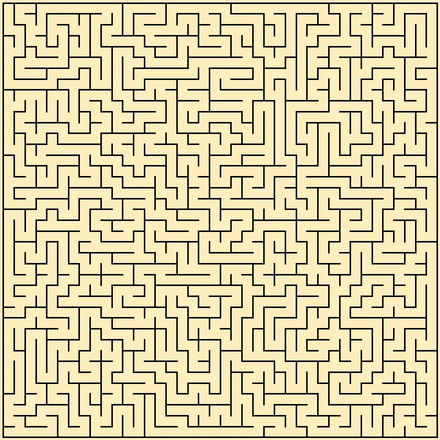
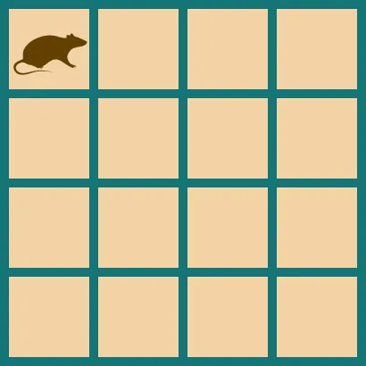
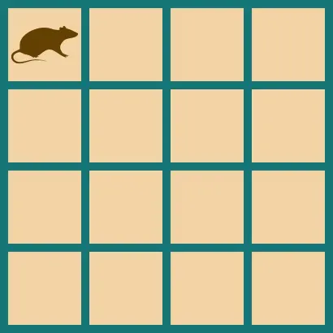
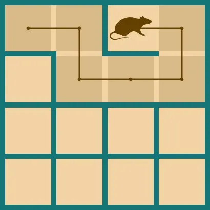
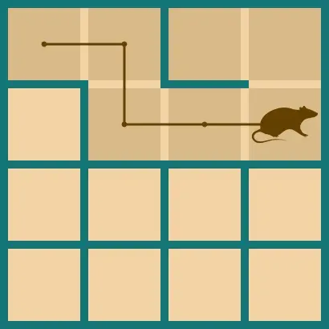
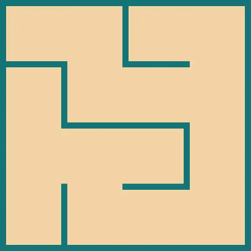

Рекурсивний пошук з поверненням
Вступ
Рекурсивний пошук з поверненням (Reverce backtracking) — це чи не найпростіший алгоритм для генерації ідеальних лабіринтів. Лабіринти, які він утворює мають довші ходи у порівнянні з алгоритмом Еллера. Окрім того, алгоритм з легкістю можна модифікувати для генерації лабіринтів з розмірністю вищою ніж 2D, чи лабіринтів на неквадратній сітці. Проте, він зовсім не підходить для генерації безкінечних лабіринтів.
Ось декілька лабіринтів, створених цим алгоритмом:
  
Алгоритм та код
Словесний опис
На початку роботи всі клітинки в нашому лабіринті закриті стінками. В процесі виконання ми будемо прорізати крізь них ходи. Для цього алгоритм використовує покажчик на певну клітинку. Для зручності, назвімо його, наприклад, щуром.

Наш щур рухається по лабіринту, переміщаючись на сусідні клітинки, на яких він ще не був. При цьому він руйнує стінку між ними. Клітинки, які вже були відвідані потрібно якось позначати. В цьому прикладі вони замальовані трохи темнішим кольором. Окрім того, щур пам'ятає свій пройдений шлях, як стек куди він заносить відвідані клітинки (стек шляху). На зображеннях шлях щура зображений як коричнева лінія.
На кожному своєму кроці щур оглядає чотири навколишні клітинки, та випадково обирає одну, серед тих, до яких він ще не заходив. Він руйнує стінку в тому напрямку та переміщується на обрану клітинку. А клітинку, яку він щойно залишив, додає до стеку шляху.

Якщо ж щуру немає куди йти, так як усі сусідні клітинки зайняті, то він рухається назад звідки він прийшов, та відкидає ці клітинки зі стеку шляху. Так, він рухається задом на перед, до тих пір, поки знову не знайде клітинку, біля якої є ще не відвідані клітинки, та піде в одну з них.

Після багаторазових проходжень та повернень назад, щур врешті-решт повернеться до самого початку лабіринту, а його стек шляху буде порожнім. Це й буде свідчити про те, що алгоритм завершив свою роботу.
 
Програмний код
Також, ви можете скористатись моїм виконанням цього алгоритму на мові GDScript:
func backrtack(width: int, height: int) -> Array:
var maze = create_array2D(width, height)
var trail : Array = [] # Шлях пройдений щуром
var position : Vector2 = Vector2.ZERO # Розташування щура
while true:
# 0 — Вліво 1 — Вправо 2 — Вгору 3 — Вниз
var possible_directions : Array = []
# Шукаємо невідвідані клітинки серед сусідніх
if position.x > 0 && maze[position.x - 1][position.y].visited == false:
possible_directions.append(0)
if position.x < width - 1 && maze[position.x + 1][position.y].visited == false:
possible_directions.append(1)
if position.y > 0 && maze[position.x][position.y - 1].visited == false:
possible_directions.append(2)
if position.y < height - 1 && maze[position.x][position.y + 1].visited == false:
possible_directions.append(3)
# Якщо всі сусіди зайняті — повертаймось назад
if possible_directions.size() == 0:
maze[position.x][position.y].visited = true
position = trail.pop_back()
# Якщо щур знову в точці (0,0) — то потрібно закінчити роботу
if position == Vector2.ZERO:
break
else:
# Серед доступних напрямків випадково оберімо один
var dirrection = random_among(possible_directions)
# Та перейдімо по ньому
match dirrection:
0:
trail.push_back(position)
maze[position.x][position.y].visited = true
position.x -= 1
maze[position.x][position.y].has_way_right = true
1:
trail.push_back(position)
maze[position.x][position.y].visited = true
position.x += 1
maze[position.x - 1][position.y].has_way_right = true
2:
trail.push_back(position)
maze[position.x][position.y].visited = true
position.y -= 1
maze[position.x][position.y].has_way_bottom = true
3:
trail.push_back(position)
maze[position.x][position.y].visited = true
position.y += 1
maze[position.x][position.y - 1].has_way_bottom = true
return maze
У коді також використовуються 2 методи. Для створення масиву масивів:
func create_array2D(width: int, height: int) -> Array:
var arr = []
for x in width:
arr.append([])
for y in height:
arr[x].append(MazeCell.new())
return arr
Та для вибору випадкового елементу з масиву:
func random_among(arr : Array) -> int:
return arr[randi() % arr.size()];
Для реалізації клітинки лабіринту використовується ось такий клас:
class MazeCell:
extends Reference
export var visited : bool
export var has_way_bottom : bool
export var has_way_right : bool